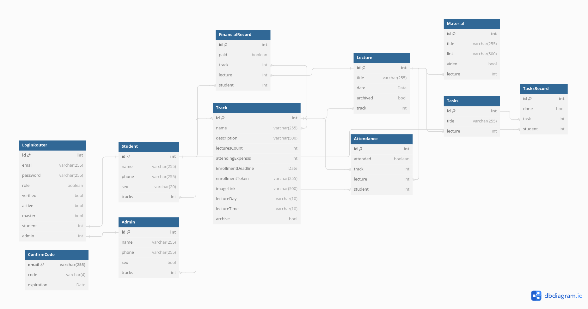

Welcome to Mishkah API Documentations
Get started
This is the Backend API Documentation For Mishkah System.
How to Use
To get Started, You Have To Have The Base URL For The API, For Example :
http://api.mishkah.omarelnemr.xyz/
Then You Would Have to Follow The Instructions Below For How to Use Every Endpoint with A Correct Parameters
Note that The Data Used in Examples are Not Real it is Just For Clearification
Common Responses
Every Endpoint when Triggerd, It Takes it's Parameteres and then Respooned With with the Desired Data or one of The Following Four Options:
Done With Status 200:When The Request is Supposed To Take an Action like Submitting Homework or adding a new Event Announcement, if you Receive "Done" That Means Every Thing Went Well and The Action is Successfully Performed
Missing Parameters With Status 406:When The Request Require Some Parameters and they are not Given in the Request or may be misspelled, so make sure you add them and spill them right
Not Found With Status 404:When You Are Trying to Get Some Data That is Not Exist in Database, or The Parameters are having invalid Values
Error While DB Request With Status 406:When Something Happen After Initializing a Request To Database, in that case, you might Check the Parameters Data Types and Values, or How The Database Parameters are Named For Addressing
if you find Any Struggle with One of These Responses or there is another response Showed Up, Contact Me Immediately
Database
in This Project, We Used MySQL Database as our Relations DB, With TypeORM, the DB Scheme Was Built with a Tool Called DBDiagrame, You Can See our Diagram Here
DBDiagrame/Mishkahin General, You Can See our DB Scheme Here:
User Branches
Branches is the Diffrent Sections of our System for Users, Like Overview Page, Lecture Page and So on.
Every Branch Has it's Own Endpoint To Distinguish it From The Others, Like:
Overview Branch: /overview Endpoint
lectures's Branch: /lecture Endpoint
Make Sure to Add The Token Recieved from the Login Proccees in the Authentication Header for Each Request For Server-side Authentication
For Example, To Use URL for Getting All Homewrok Assinged To Student, The URL Will Be Like:
http://mishkah.api.omarelnemr.xyz/lecture/lecture-list
Authentication
This Branch is Responsible For Authentication Endpoints like Login, Signup
Here is All Endpoint That Can Be Used:
Overview
This Branch is Responsible For The Overview Page Endpoints like Payment overview or lectures brief
Here is All Endpoint That Can Be Used:
Tracks
This section provides information on the different tracks available in our system.
Each track With specific details and endpoints.
Lectures
This section contains information related to lecture endpoints.
Find all the necessary details to manage and access lectures.
Attendance
This section provides details about attendance tracking and related endpoints.
Ensure accurate attendance records using the provided tools.
Todo
This section allows The User to See all his/her Tasks with Easy Access
Settings
This section allows you to manage various settings of the system.
Customize the system according to your preferences.
Admin Branches
This section is for administrators to manage different branches of the system.
Make Sure to Add The Token Recieved from the Login Proccees in the Authentication Header for Each Request For Server-side Authentication
Authentication
This section is for administrators to manage authentication endpoints like Login, Signup.
Here are all endpoints that can be used:
Tracks
This section is for administrators to manage the different tracks available in the system.
Each track has specific details and endpoints.
Lectures
This section is for administrators to manage lecture-related endpoints.
Find all the necessary details to manage and access lectures.
Attendance
This section is for administrators to manage attendance tracking and related endpoints.
Ensure accurate attendance records using the provided tools.
Financials
This section provides details on managing the financial aspects of the system.
Access and manage financial records and endpoints.
Files
This section provides details on managing the Files Like Attendance Sheet Files of Financils Sheet Files
Super Admin
This section is for managing admin and users.
Ensure proper admin user management for secure system operation.